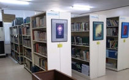

Home |
Resources |
About Us |
Catalog |
How to Contribute |
News |
Sign In |
|---|---|---|---|---|---|---|
The Asian Technical-Vocational Education Resource Center (ATVERC) is a project of the National Institute for Technical Education and Skills Development (NITESD) of the Technical Education and Skills Development Authority which aims to revive and rejuvenate the operation of Learning Resource Centers (LRC) in the Philippines and provide services as seen in the "Library of Commons". Researchers and students may come to the ATVERC to explore the facility and gain access to resources with ease using in-house computer workstations or personal gadgets such as tablets and smartphones. |
||||||
Background:
|
 | |||||
Vision
To transform the facility into an E-Resource hub of TESDA.Mission Provide TVET with e-resources on technology, environment, teaching and learning strategies.Objectives: - Prepare the necessary facilities to build-up and store the data of computer-generated learning resources; |
||||||
Expected Output:
- Facility containing the existing collections and data imaging system to convert selected TESDA documents to e-format;DESCRIPTION OF THE PROJECT
|
Strategies:
- Conduct a physical inventory of resources and review user’s requirements; |
|||||
PROGRAM BENEFICIARES
The primary beneficiaries of the Center are the following:FEATURES OF THE PROJECT The project will feature a facility containing computer-generated learning resources and may be accessed through the eResource area computer workstations. A link to the ATVERC will be made available in the TESDA website. |
Clientele:
|
|||||
About the office leading this project:
The National Institute for Technical Education and Skills Development (NITESD) serves as the technology research and development arm of the government in the field of TESD. It facilitates the development, validation and evaluation of curriculum and training materials; develops an integrated program for the continuing development of trainers, teachers and instructors in the TESD sector; conducts studies and integrates career guidance in the development and implementation of training technology and delivery models; develops and maintains regional and international linkages in pursuit of quality training technology, curriculum, learning materials, training aids and TESD trainers development; and performs such other functions as may be authorized. NITESD have four divisions namely: Training Technology Development Division (TTDD), Training Research and Development Division (TRDD), Learning Development Division (LDD), and Curriculum and Training Aids Development Division (CTADD). |
||||||